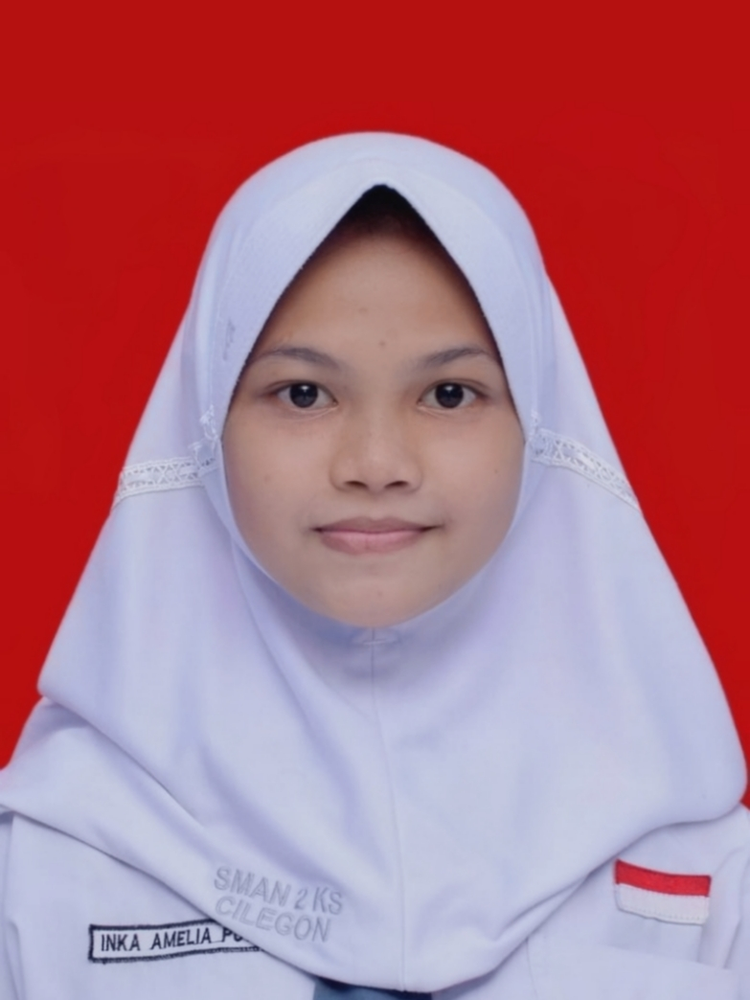

Inka Amelia Putri
Email : inkaa4979@gmail.com
Telepon : +62-852-1695-3866
Alamat : Cilegon, Banten
Profil
Lulusan SMA jurusan IPS dengan minat dibidang komputer dan bisnis. Menguasai riset pasar, analisis sosial, dan pengembangan bisnis, serta memiliki kemampuan komunikasi yang efektif. Bersedia untuk memperdalam pengetahuan dibidang TI dan bisnis serta berkontribusi dalam tim yang inovatif.
Pendidikan
| Tingkat Pendidikan |
Institusi |
Tahun Lulus |
| SMA |
SMAN 2 KS CILEGON |
2022 |
| SMP |
SMPN 3 CILEGON |
2019 |
| SD |
MIN 1 CILEGON |
2016 |
Pengalaman
Ketua Divisi PSDM Rohani Islam
SMAN 2 KS Cilegon • 2020 - 2022
- Mengorganisir dan memimpin kegiatan pengembangan keterampilan anggota.
- Berkolaborasi dengan berbagai divisi untuk mencapai tujuan organisasi.
Anggota Kewirausahaan
SMAN 2 KS Cilegon • 2019 - 2022
- Berkolaborasi dengan komunitas kewirausahaan dan organisasi terkait.
- Mengidentifikasi dan menyelesaikan masalah operasional.
Anggota Club IPS
SMAN 2 KS Cilegon • 2019 - 2021
- Mempelajari mengenai produksi, distribusi, dan konsumsi barang serta jasa.
- Mempelajari formula strategi untuk produk, harga, tempat, dan promosi.
Keahlian
- MS Office
- Analisis data
- Pembukuan Laporan Keuangan